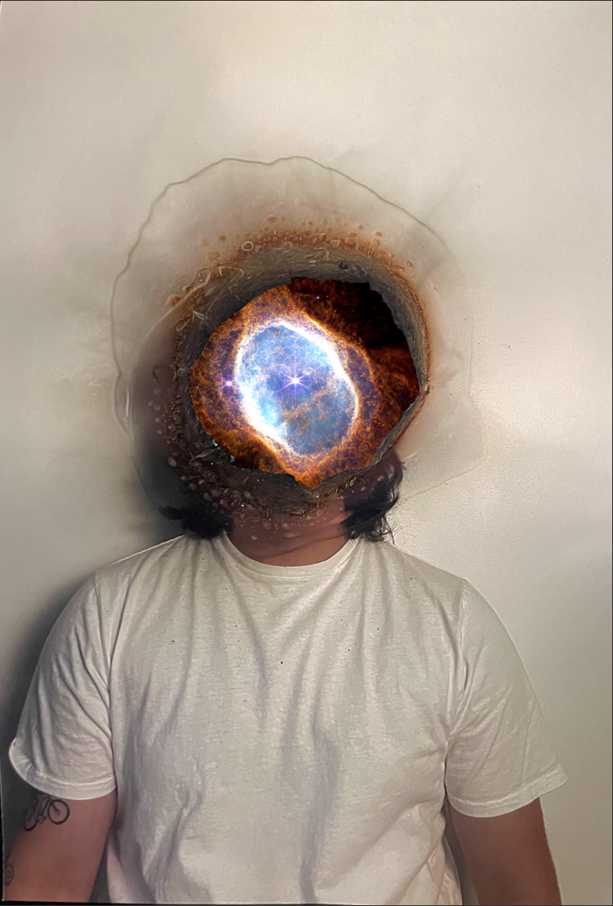

Biography
Montreal-based artist working across video, games, and interactive media.
Luca Sabelli is completing a Bachelor of Fine Arts in Computational Arts at Concordia University, building work across moving image, interaction, and perceptual systems.
Artist Biography
Technology operates here as both material and conceptual framework.

Luca Sabelli is a Montreal-based artist working across video, game development, and interactive media. He is currently completing a Bachelor of Fine Arts in Computational Arts at Concordia University. His practice explores identity, the surreal, and the ways digital systems shape perception.
Technology functions here as both material and conceptual framework. Through moving image, game engines, and interactive systems, Sabelli builds works that examine how presence, meaning, and reality are constructed through mediation.
He often works with generative systems, audiovisual composition, and rule-based environments to explore the unstable space between lived experience and virtual space. Across the work, agency becomes ambiguous and meaning emerges through partial information.
Influenced by experimental film and interactive digital art, Sabelli creates visual, spatial, and interactive worlds where the artificial can feel strangely familiar.
Primary
Best for project inquiries, collaborations, commissions, and general contact.
Social
Links
Replace these placeholders with your active platforms when you are ready.
Availability
Current focus
Available for freelance editing, creative coding collaborations, exhibition proposals, interactive prototypes, and selected commissioned work.
Working Areas
Project types
Open to film work, installations, interactive media, design research, interface systems, and experimental digital projects that value atmosphere and formal clarity.